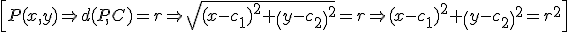

La circunferencia es el lugar geométrico de los puntos del plano que equidistan de uno fijo llamado centro. La distancia entre ese punto fijo y los demás se llama radio.
Si C(c1,c2) y el radio es r:

Ejemplo 1. Si C(1,3) y r = 3, entonces la ecuación es:
(x – 1)2+ (y – 3)2 = 32 → x2 + y2 – 2x – 6y + 1 = 0
Ejemplo 2. Encuentra el centro y el radio de la circunferencia: x2 + y2 + 2x – 8y - 8 = 0
Usamos el método de “completar cuadrados”, por medio de las identidades notables:
x2 + 2x + 1 + y2 – 8y + 16 - 25 = 0
(x + 1)2+(y – 4)2 = 52 → C(-1,4) r = 5
Ejercicios
1.- Encuentra la ecuación de la circunferencia de centro (1,-2) y radio 4.
2.- Averigua las coordenadas del centro el radio de la circunferencia x2 + y2 + 6x - 10y - 66 = 0
Soluciones: 1) (x - 1)2 + (y + 2)2 = 42; 2) C(-3,5) r = 10